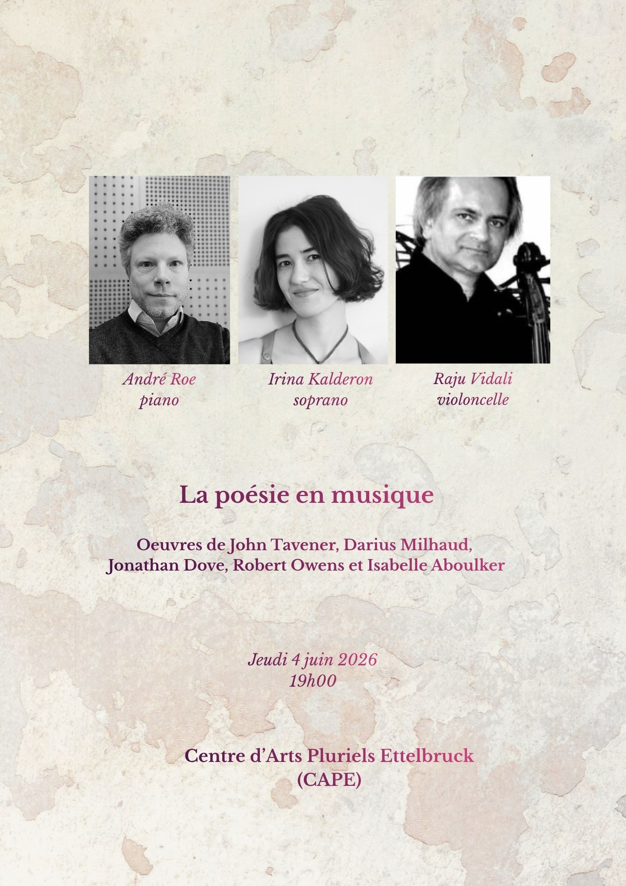

With a crystal clear high coloratura soprano voice, Irina specialises in Baroque music as well as in 20th and 21st century music.
Here you can find more about me:

Discover Irina's training, influences and opera roles.
Learn about the Baroque ensemble “Les Promenades” and other collaborations.
Watch performances and browse photo galleries from concerts across Europe.